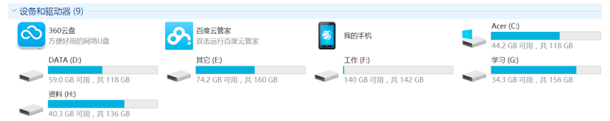

Windows和Linux文件系统区别
在 windows 平台下，打开“计算机”，我们看到的是一个个的驱动器盘符：

每个驱动器都有自己的根目录结构，这样形成了多个树并列的情形，如图所示：

在 Linux 下，我们是看不到这些驱动器盘符，我们看到的是文件夹（目录）：

类Unix系统目录结构
ubuntu没有盘符这个概念，只有一个根目录/，所有文件都在它下面
/ 斜杠
\ 反斜杠 - 杠
_下划线

Linux 目录
- /：根目录，一般根目录下只存放目录，在Linux下有且只有一个根目录。所有的东西都是从这里开始。当你在终端里输入“/home”，你其实是在告诉电脑，先从/（根目录）开始，再进入到home目录。
- /bin、/usr/bin: 可执行二进制文件的目录，如常用的命令ls、tar、mv、cat等。
- /boot：放置linux系统启动时用到的一些文件，如Linux的内核文件：/boot/vmlinuz，系统引导管理器：/boot/grub。
- /dev：存放linux系统下的设备文件，访问该目录下某个文件，相当于访问某个设备，常用的是挂载光驱 mount /dev/cdrom /mnt。
- /etc：系统配置文件存放的目录，不建议在此目录下存放可执行文件，重要的配置文件有 /etc/inittab、/etc/fstab、/etc/init.d、/etc/X11、/etc/sysconfig、/etc/xinetd.d。
- /home：系统默认的用户家目录，新增用户账号时，用户的家目录都存放在此目录下，~表示当前用户的家目录，~edu 表示用户 edu 的家目录。
- /lib、/usr/lib、/usr/local/lib：系统使用的函数库的目录，程序在执行过程中，需要调用一些额外的参数时需要函数库的协助。
- /lost+fount：系统异常产生错误时，会将一些遗失的片段放置于此目录下。
- /mnt: /media：光盘默认挂载点，通常光盘挂载于 /mnt/cdrom 下，也不一定，可以选择任意位置进行挂载。
- /opt：给主机额外安装软件所摆放的目录。
- /proc：此目录的数据都在内存中，如系统核心，外部设备，网络状态，由于数据都存放于内存中，所以不占用磁盘空间，比较重要的目录有 /proc/cpuinfo、/proc/interrupts、/proc/dma、/proc/ioports、/proc/net/* 等。
- /root：系统管理员root的家目录。
- /sbin、/usr/sbin、/usr/local/sbin：放置系统管理员使用的可执行命令，如fdisk、shutdown、mount 等。与 /bin 不同的是，这几个目录是给系统管理员 root使用的命令，一般用户只能"查看"而不能设置和使用。
- /tmp：一般用户或正在执行的程序临时存放文件的目录，任何人都可以访问，重要数据不可放置在此目录下。
- /srv：服务启动之后需要访问的数据目录，如 www 服务需要访问的网页数据存放在 /srv/www 内。
- /usr：应用程序存放目录，/usr/bin 存放应用程序，/usr/share 存放共享数据，/usr/lib 存放不能直接运行的，却是许多程序运行所必需的一些函数库文件。/usr/local: 存放软件升级包。/usr/share/doc: 系统说明文件存放目录。/usr/share/man: 程序说明文件存放目录。
- /var：放置系统执行过程中经常变化的文件，如随时更改的日志文件 /var/log，/var/log/message：所有的登录文件存放目录，/var/spool/mail：邮件存放的目录，/var/run:程序或服务启动后，其PID存放在该目录下。
用户目录
位于/home/user，称之为用户工作目录或家目录,表示方式：
/home/user
~
相对路径和绝对路径
绝对路径
从/目录开始描述的路径为绝对路径，如：
cd /home
ls /usr
相对路径
从当前位置开始描述的路径为相对路径，如：
cd ../../
ls abc/def
.和..
每个目录下都有.和..
. 表示当前目录
.. 表示上一级目录，即父目录
根目录下的.和..都表示当前目录
文件权限
文件权限就是文件的访问控制权限，即哪些用户和组群可以访问文件以及可以执行什么样的操作。
Unix/Linux系统是一个典型的多用户系统，不同的用户处于不同的地位，对文件和目录有不同的访问权限。为了保护系统的安全性，Unix/Linux系统除了对用户权限作了严格的界定外，还在用户身份认证、访问控制、传输安全、文件读写权限等方面作了周密的控制。
在 Unix/Linux中的每一个文件或目录都包含有访问权限，这些访问权限决定了谁能访问和如何访问这些文件和目录。
访问用户
通过设定权限可以从以下三种访问方式限制访问权限：
- 只允许用户自己访问（所有者） 所有者就是创建文件的用户，用户是所有用户所创建文件的所有者，用户可以允许所在的用户组能访问用户的文件。
- 允许一个预先指定的用户组中的用户访问（用户组） 用户都组合成用户组，例如，某一类或某一项目中的所有用户都能够被系统管理员归为一个用户组，一个用户能够授予所在用户组的其他成员的文件访问权限。
- 允许系统中的任何用户访问（其他用户） 用户也将自己的文件向系统内的所有用户开放，在这种情况下，系统内的所有用户都能够访问用户的目录或文件。在这种意义上，系统内的其他所有用户就是 other 用户类
这有点类似于 QQ 空间的访问权限：

- 这个 QQ 空间是属于我的，我相当于管理者（也就是“所有者”），我想怎么访问就怎么访问。
- 同时，我可以设置允许 QQ 好友访问，而这些 QQ 好友则类似于“用户组”。
- 当然，我可以允许所有人访问，这里的所有人则类似于“其他用户”。
访问权限
用户能够控制一个给定的文件或目录的访问程度，一个文件或目录可能有读、写及执行权限：
- 读权限（r） 对文件而言，具有读取文件内容的权限；对目录来说，具有浏览目录的权限。
- 写权限（w） 对文件而言，具有新增、修改文件内容的权限；对目录来说，具有删除、移动目录内文件的权限。
- 可执行权限（x） 对文件而言，具有执行文件的权限；对目录了来说该用户具有进入目录的权限。
注意：通常，Unix/Linux系统只允许文件的属主(所有者)或超级用户改变文件的读写权限。
示例说明

第1个字母代表文件的类型：“d” 代表文件夹、“-” 代表普通文件、“c” 代表硬件字符设备、“b” 代表硬件块设备、“s”表示管道文件、“l” 代表软链接文件。 后 9 个字母分别代表三组权限：文件所有者、用户者、其他用户拥有的权限。
每一个用户都有它自身的读、写和执行权限。
- 第一组权限控制访问自己的文件权限，即所有者权限。
- 第二组权限控制用户组访问其中一个用户的文件的权限。
- 第三组权限控制其他所有用户访问一个用户的文件的权限。
这三组权限赋予用户不同类型（即所有者、用户组和其他用户）的读、写及执行权限就构成了一个有9种类型的权限组。